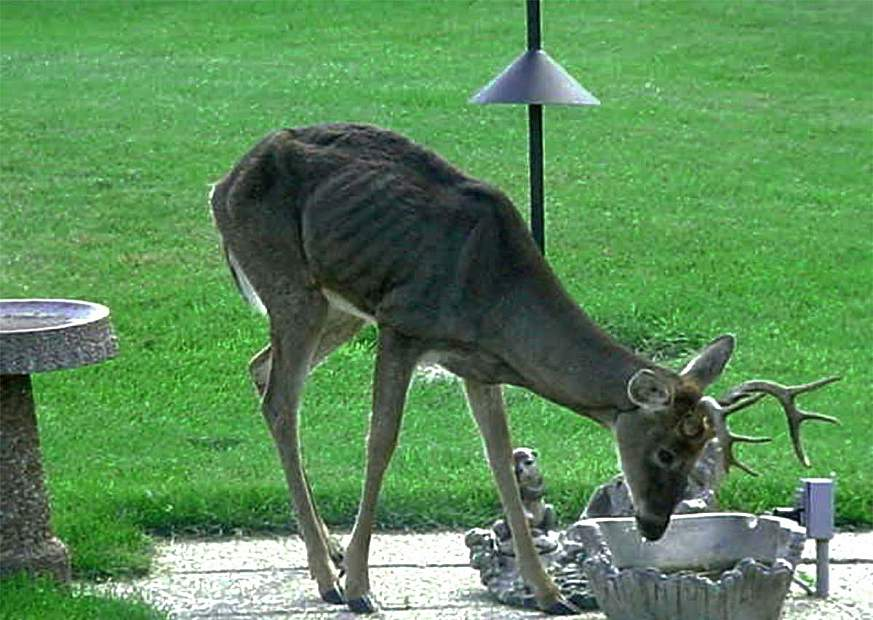

Chronic Wasting Disease
Academic Seminar Project by William Wei
☰ Menu
Overview
Chronic Wasting Disease or CWD is a progressive, deadly disease that is found in deer, elk, moose, and reindeer - generally,
mammals of the deer family, cervids. CWD is 100% fatal. It attacks an animal's proteins, eventually causing the death of its brain cells.
Though it is relatively rare, CWD has been found in wild or captive cervids in 25 states, three Canadian Provinces, Norway, and South Korea.

A buck with CWD.
TSEs and Prions
CWD is not caused by a virus or bacteria. It is a member of a group of diseases known as transmissible spongiform encephalopathies, or TSEs.
These are a group of rare degenerative brain disorders characterized by tiny holes that give the brain a "spongy" appearance when viewed under a microscope.
Surprisingly, some of these famously fatal TSEs can be contracted by humans. These include Creutzfeldt-Jakob disease, kuru, and familial fatal insomnia.
TSEs are caused by prions and are sometimes referred to as prion diseases. Prions are proteins with functions related to cell signaling and
neuroprotection that become misfolded for unknown causes. This misfolding is highly dangerous, infectious, and renders the protein completely useless. Prions
convert other healthy proteins into prions, and their accumulation in brain tissue leads to the killing of neurons, dysfunction, and ultimately, death.
Visitor Counter
William Wei
2021